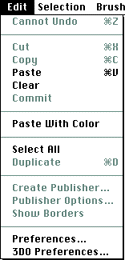
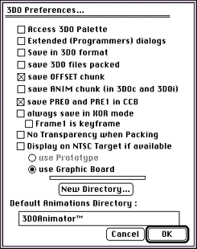

This section discusses Edit menu commands that have unique functionality
in 3DO Animator. Figure shows all commands in the Edit menu although the
only command discussed in this section is 3DO Preferences.

Figure 1: Edit menu.
3DO Preferences command
When you select 3DO Preferences from the Edit menu, 3DO Animator displays
a dialog that lets you set preferences for preparing art on the 3DO
Station (see Figure 2).

Figure 2: 3DO Preferences dialog.
The 3DO Preferences dialog offers the following options:
Access 3DO Palette
The 3DO palette is not the default palette. If you check the Access 3DO
Palette checkbox, the Access 3DO Palette command in the 3DO Options menu
is checked by default and you can select the other two commands.
Extended (Programmers) dialogs
When checked, a dialog allows programmers to set extended Preferences.
Save in 3DO Format
Check this box to save in 3DO format instead of PICT (the default).
Save 3DO files packed
When checked, 3DO Animator saves 3DO files packed by default.
Save PRE0 and PRE1 in CCoB
When checked, 3DO Animator saves the two preamble words to the cel control
block (CCB). The preamble words contain size information. Instead of
saving a CCB for each frame, you can store the information in the preamble
words at the beginning of the data.
Always Save in XOR Mode
Saves animations in XOR mode. The XOR operation is performed between two
consecutive frames. The XOR operation performed to frame 1 for all frames
is not currently supported.
Display on NTSC Target if Available
If this option is checked, 3DO Animator displays the files you open on the
NTSC screen and the Macintosh screen simultaneously, provided you have an
NTSC screen and an Artist Card. Currently, only the Use Graphic Board
option is available.
Default Animations Directory
Lets you change the default directory for animations that are too big to
fit into memory. The current default is displayed in the text box. Click
New Directory to select a different directory.